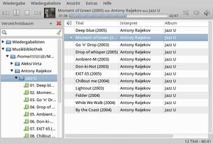
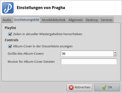
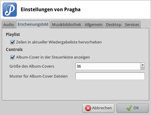

Pragha
Dieser Artikel wurde für die folgenden Ubuntu-Versionen getestet:
Ubuntu 16.04 Xenial Xerus
Ubuntu 14.04 Trusty Tahr
Zum Verständnis dieses Artikels sind folgende Seiten hilfreich:
Pragha  ist ein leichtgewichtiger und komfortabler AudioPlayer mit Musikbibliothek-Unterstützung. Begonnen wurde das Projekt unter dem Namen "Consonance", allerdings hat der ursprüngliche Entwickler die Entwicklung im April 2009 eingestellt. Daraufhin wurde das Programm "geforkt" und unter dem neuen Namen weiterentwickelt. Aktuell werden die Formate ASF, APE, MP3, M4A, OGG, WAV und FLAC unterstützt. Daneben ist das Programm als Audio CD-Player nutzbar.
ist ein leichtgewichtiger und komfortabler AudioPlayer mit Musikbibliothek-Unterstützung. Begonnen wurde das Projekt unter dem Namen "Consonance", allerdings hat der ursprüngliche Entwickler die Entwicklung im April 2009 eingestellt. Daraufhin wurde das Programm "geforkt" und unter dem neuen Namen weiterentwickelt. Aktuell werden die Formate ASF, APE, MP3, M4A, OGG, WAV und FLAC unterstützt. Daneben ist das Programm als Audio CD-Player nutzbar.
Das im Arch Linux-Forum entstandene Programm basiert komplett auf GTK+ und integriert sich damit ideal in die Desktop-Umgebungen GNOME, Xfce und LXDE. Außerdem eignet es durch den schonenden Umgang mit Ressourcen auch speziell für schlanke Desktops auf Basis von alleinstehenden Fenstermanagern wie beispielsweise Fluxbox, für den der Vorgänger "Consonance" ursprünglich entworfen wurde. Subjektiv betrachtet erinnert Pragha stark an Exaile.

Funktionen:
Bibliotheksverwaltung über SQLite
Multiple Ansichten
Benachrichtigungen bei Liedwechsel
CD-Coveranzeige
Lastfm-Anbindung (nicht getestet)
Equalizer mit vordefinierten Presets
Tageditor
Installation¶
 Pragha befindet sich nicht in den offiziellen Paketquellen.
Pragha befindet sich nicht in den offiziellen Paketquellen.
PPA¶
Ab Ubuntu 14.04 steht ein "Personal Package Archiv" (PPA) [1] zur Verfügung.
Adresszeile zum Hinzufügen des PPAs:
ppa:ubuntuhandbook1/pragha
Hinweis!
Zusätzliche Fremdquellen können das System gefährden.
Ein PPA unterstützt nicht zwangsläufig alle Ubuntu-Versionen. Weitere Informationen sind der  PPA-Beschreibung des Eigentümers/Teams ubuntuhandbook1 zu entnehmen.
PPA-Beschreibung des Eigentümers/Teams ubuntuhandbook1 zu entnehmen.
Damit Pakete aus dem PPA genutzt werden können, müssen die Paketquellen neu eingelesen werden.
Nach dem Aktualisieren der Paketquellen kann das folgende Paket installiert [2] werden:
pragha (ppa)
 mit apturl
mit apturl
Paketliste zum Kopieren:
sudo apt-get install pragha
sudo aptitude install pragha
Fremdpaket¶
GetDeb stellt Fremdpakete zur Verfügung: pragha. Diese Pakete werden auch für ältere Ubuntu-Versionen zur Verfügung gestellt, allerdings nicht immer die aktuellste Version.
Hinweis!
Fremdpakete können das System gefährden.
Benutzung¶
Nach der Installation findet man bei Ubuntu-Varianten mit einem Anwendungsmenü einen Eintrag unter "Multimedia -> Pragha" [2].
Beim ersten Start wird gefragt, ob man den Ordner ~/Musik/ als Bibliothek für lokal gespeicherte Dateien einbinden möchte (im Regelfall ja). Die Nutzung als Audioplayer sollte keine unüberwindlichen Hürden darstellen. Man wählt Musiktitel aus der Bibliothek in der linken Spalte und fügt diese der Wiedergabeliste in der rechten Spalte hinzu. In der Symbolleiste oberhalb befinden sich die üblichen Steuerungselemente, die Cover-Anzeige und die Lautstärkeregelung (falls man nicht den systemweiten Lautstärkeregler nutzt). Wiedergabelisten können gespeichert werden und stehen damit auch später wieder zur Verfügung.
Werden Dateien aus der Bibliothek entfernt oder neue hinzugefügt, erfolgt ein Auffrischen über "Extras -> Musikbibliothek aktualisieren". Alternativ kann man auch "Extras -> Musikbibliothek neu einlesen" verwenden, um den aktuellen Stand mit der im Hintergrund verwendeten SQLite-Datenbank abzugleichen. Eine automatische Aktualisierung ist nicht vorhanden.
Konfiguration¶
 
Der Einstellungsdialog, erreichbar über "Extras -> Einstellungen", ist ebenfalls sehr übersichtlich und selbsterklärend. Hier lässt sich z.B. der Pfad zum Ordner nachträglich ändern, den Pragha als Musikbibliothek verwenden soll.

Der Einstellungsdialog, erreichbar über "Extras -> Einstellungen", ist ebenfalls sehr übersichtlich und selbsterklärend. Hier lässt sich z.B. der Pfad zum Ordner nachträglich ändern, den Pragha als Musikbibliothek verwenden soll.
Die Anzeige von Albumcovern ist per Standard aktiviert, lässt sich auf Wunsch aber deaktivieren ("Erscheinungsbild -> Albumcover in der Steuerleiste anzeigen"). Albumcover werden von Pragha automatisch erkannt, sofern sich eine entsprechende Bilddatei im JPG-Format im Ordner eines Albums befindet. Darunter kann man einen Musterdateinamen angeben, der bei der Suche nach Coverbildern benutzt werden soll. Gibt man keinen an, wird die alphabetisch erste JPG-Datei als Cover gewählt.
Das Programmsymbol im Benachrichtigungsfeld des Panels dient zum Verbergen/Anzeigen des Programmfensters und zum Beenden des Programms. In der Voreinstellung werden beim Titelwechsel Informationen zum aktuellen Titel über das Benachrichtigungssystem angezeigt. Da dies unter Umständen unruhig wirkt und von wichtigeren Dingen ablenken kann, lassen sich diese Benachrichtigungen auch deaktivieren.
Die Einstellungen werden inkl. der Datenbank im Ordner ~/.config/pragha/ gespeichert.
Links¶
Forumsthread
, in dem "Consonance" zum ersten Mal angekündigt wurde
AudioPlayer
 Programmübersicht
Programmübersicht
- Erstellt mit Inyoka
-
 2004 – 2017 ubuntuusers.de • Einige Rechte vorbehalten
2004 – 2017 ubuntuusers.de • Einige Rechte vorbehalten
Lizenz • Kontakt • Datenschutz • Impressum • Serverstatus -
Serverhousing gespendet von